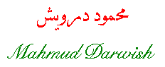
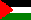

Mahmud Darwish was born in Al-Birwah
near Akka in 1941. In 1948, the village was attacked by the Zionists and
its people left to other places. Darwish ran away at the age of seven to
find himself in Lebanon knowing nothing about his family. A year later, he
went back to Palestine to find his village totally ruined and an Israeli
settlement is in its place.
Darwish wrote his first poems when he was in the elementary school in the
village of Der Al-Asad. He was detained by the Israelis and was put
under house arrest several times. He was denied having a higher education.
However he managed to go to Moscow in 1970 from where he went
to Cairo in 1971. He was the head of The Palestinian Center for
Research, editor of Shu'oon Falasteeniyyah (Palestinian
Affairs Magazine), head of The General Association of Palestinian
Writers and Journalists, editor of Al-Karmil Magazine of the
GAPWJ, and lately member of The Executive Committee of the PLO. He
resigned from this position in 1993.
 Poem
[Arabic]
[English]
 Go back to Poets from Palestine
Go back to Poets from Palestine